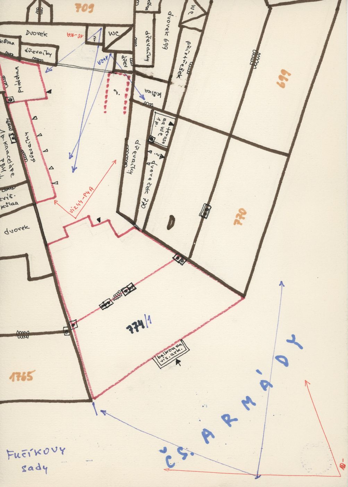
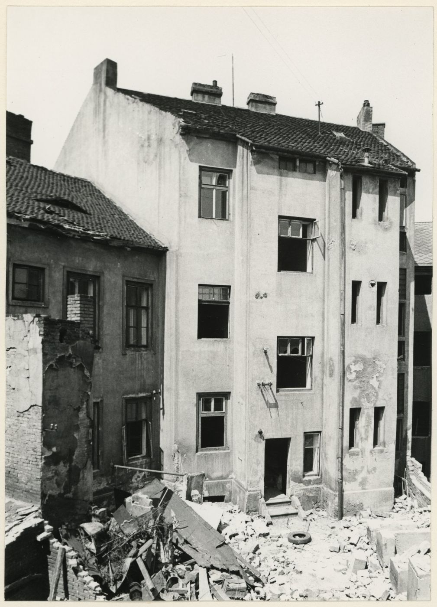
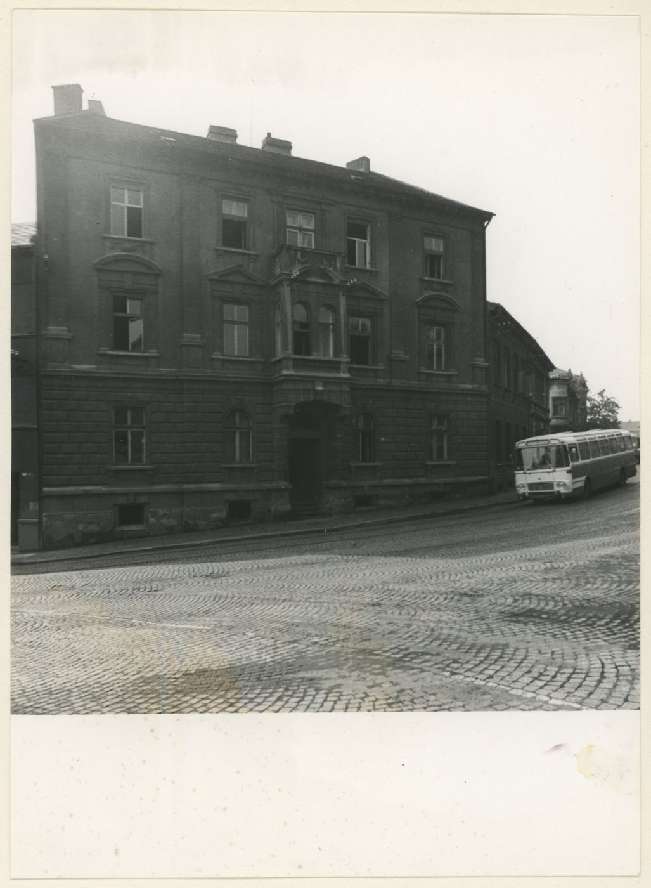
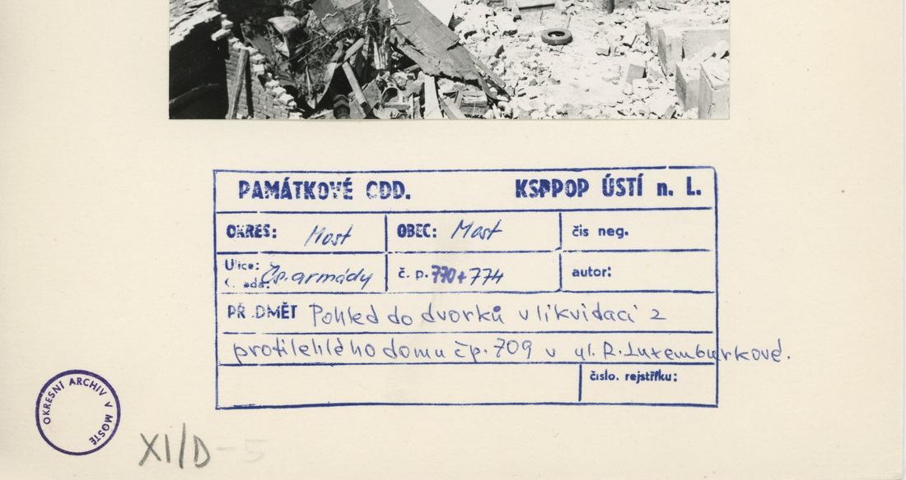
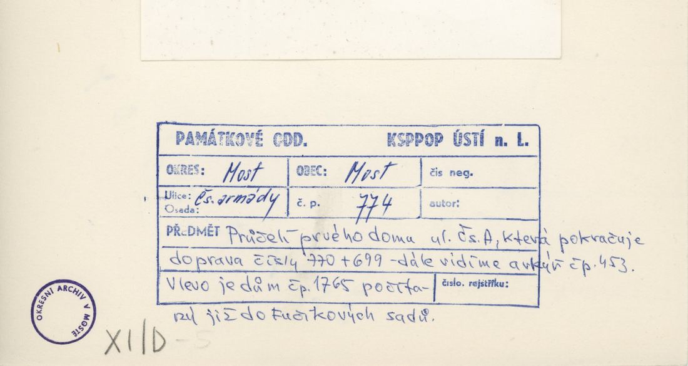
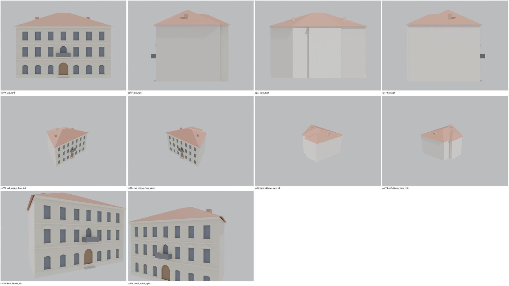

Identita domu
Třípodlažní dům na nároží ČSA/Fučíkovy sady (plán cp_774_001: „774/1“, Fučíkovy sady vlevo, dvůr čp. 774). Foto cp_774_001: neobarokní průčelí ~7 os, střední rizalit s balkonem a portálem; cp_770,774_001: dvorní strana po demolici sousedů.
Použité prameny: cp_774_001 PLANE; cp_774_001, cp_770,774_001 PHOTO.
GIS: GIS id 1512 (251 m², 7 vrcholů). V oblasti „Cs_Armady“ je dům veden podruhé se stejnými přílohami.
Prameny (5 příloh)
Všechny přílohy domu v databázi Libuše, každá otevřená a zapsaná v plan_search.json. Stav rešerše plánů: found; situační/střešní náčrt (ruční, nekótovaný, PLANE,BW) – není stavební výkres; půdorysné rozměry z GIS nebo odhad. Kliknutím otevřete větší náhled.


situační náčrt
SHA-256 fcbd40842e2b…


fotografie
SHA-256 102a82b33cb7…


fotografie
SHA-256 0aaeed2eba96…


archivní karta (rub) · výřez textu
SHA-256 0dae6bc26b02…


archivní karta (rub) · výřez textu
SHA-256 f3047677761f…
Model
| Revize modelu | r2 (zachované revize: r1, r2) |
|---|---|
| Poloha | GIS půdorys id 1512 |
| Šířka průčelí | 22,43 m |
| Výška okapu | 12,20 m (odhad) |
| Podlaží | 3 |
| Střecha podle pramenů | nízká valba |
| Střecha v modelu | valbová nad nepravidelným půdorysem (přímá kostra) |
| Otvory | 21 |
| Vikýře / vedlejší hmoty | 0 / 0 |
| Polygonů | 466 |
Zdroje rozměrů, jak jsou zapsány v plánu modelu
| Rozměry | GIS id 1512 polygon (front 22.43 m, depth 12-15.6 m) |
|---|---|
| Průčelí | photo cp_774_001: 3 storeys, ~7 axes, central risalit with portal and 1st-floor balcony, pediments; rear cp_770,774_001 |
| Střecha | low hip (skeleton over GIS polygon) |
Kontrola: 10 povinných pohledů

Nálezy
- 3 podlaží, 7 os, portál s balkonem, frontony, kordonové římsy, skeletonová nízká valba nad nepravidelným půdorysem; r2 schody (2 stupně) bez překryvu
Opravy
- r2: schody, konkávní čtyřúhelník rozdělen
Hypotézy
Vše níže je model_hypothesis, provisional, locked: false.
- výšky podlaží odhad (4,2/3,6/3,6)
- rizalit a balkon zjednodušeny
- zadní křídlo bez pramene
- rear wing and courtyard annexes not modelled
- all storey heights, opening sizes and roof pitches are estimates from photographs (model_hypothesis, provisional, locked=false)
Soubory
- Model čp. 774, GLB
- Pracovní složka: F:\MOST\output\zatecka_street_claude_2026-10-17\houses\cp774\
plan_search.json,geometry_plan.json,README.md,texture_handoff_spec.json,r2/cp_774_G_r2.blend,r2/qa/qa_review.json